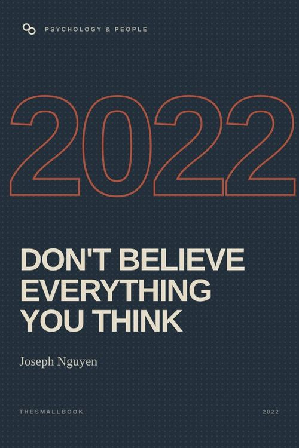

Library › Authors › Joseph Nguyen
Books by Joseph Nguyen
Joseph Nguyen has one book in the library. Every book here is read down to the big idea, the lessons, the lines worth keeping and the actions worth taking. Start with the summary, then buy the full book if it earns a place on your shelf.

Don't Believe Everything You Think
2022 · 11 min · 8 lessons
Most of our suffering comes not from events but from the thoughts we attach to them. See thinking for what it is and you can let it pass.
Joseph Nguyen argues that the root of anxiety, stress and unhappiness is not our circumstances but our thinking, specifically, the habit of believing and judging every thought. He distinguishes between thoughts, which arise naturally, and thinking, which is the act of engaging with and analysing them. Suffering comes from thinking about our thoughts. When we recognise this, we can let thoughts pass, access a calmer state and act from intuition rather than fear. The book is short and simple, aimed at helping...
Lessons in the summary
- The Root Cause of Suffering
- Thoughts Versus Thinking
- You Are Not Your Thoughts
- Feelings Are Signals
- Access Intuition and Clarity
- Peace Is the Natural State
- Act From Inspiration, Not Fear
- Living With Less Thinking
Lines worth keeping
- Thoughts are not the problem. Thinking about our thoughts is.
- You are not your thoughts. You are the one who is aware of them.
- Peace is our natural state when we stop thinking about our thinking.
Questions Joseph Nguyen helps answer
Read nearby authors next
- Devdutt Pattanaik 5 books
- Malcolm Gladwell 5 books
- A.P.J. Abdul Kalam 4 books
- Adam Grant 4 books
- Chip Heath & Dan Heath 4 books
- Daniel H. Pink 3 books
- Gurcharan Das 3 books
- Jonathan Haidt 3 books
Questions Joseph Nguyen helps answer
Where should I start with Joseph Nguyen? Start with Don't Believe Everything You Think: Most of our suffering comes not from events but from the thoughts we attach to them. See thinking for what it is and you can let it pass.